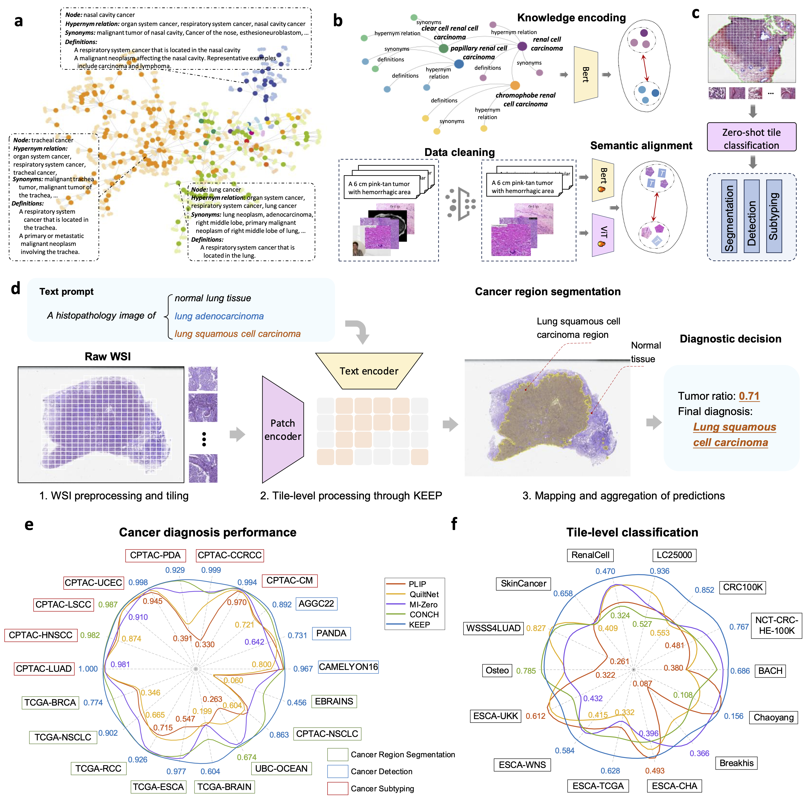
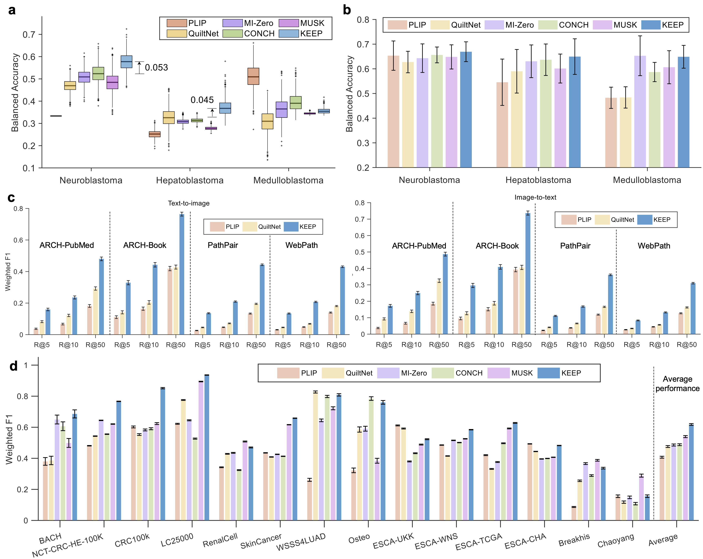
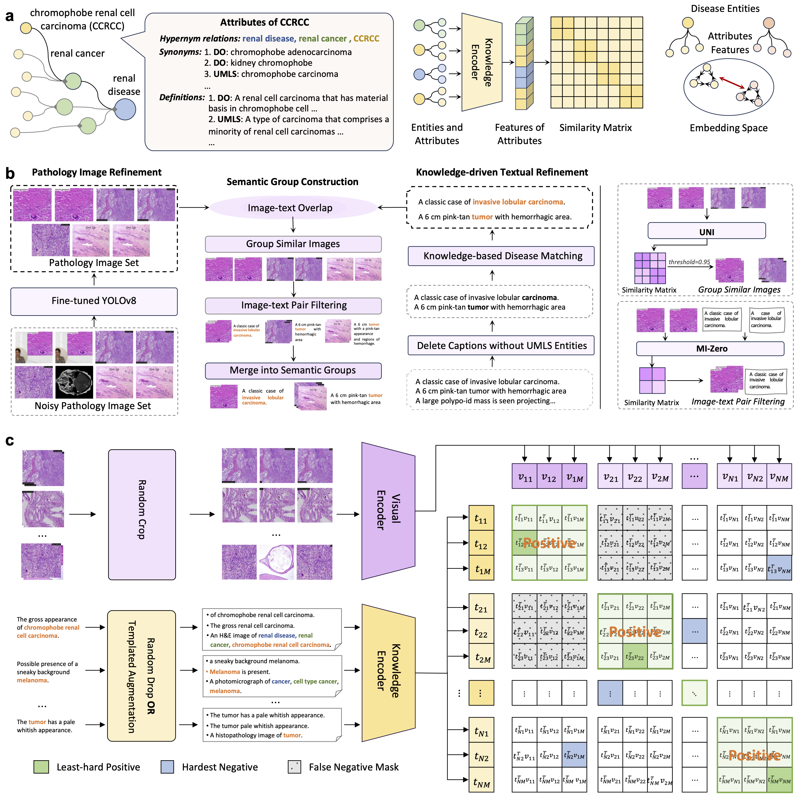

A Knowledge-enhanced Pathology Vision-language Foundation Model for Cancer Diagnosis
|
Xiao Zhou1, Luoyi Sun1,2, Dexuan He3, Wenbin Guan4,
Ge Wang5, Ruifen Wang4, Lifeng Wang4
|
Xiaojun Yuan6, Xin Sun7, Ya Zhang1,3, Kun Sun8 ,
Yanfeng Wang1,3, Weidi Xie1,3 ,
Yanfeng Wang1,3, Weidi Xie1,3
|
|
1 Shanghai Artificial Intelligence Laboratory, 2 Zhejiang University
|
|
3 School of Artificial Intelligence, Shanghai Jiao Tong university
|
|
4 Department of Pathology, Xin Hua Hospital Affiliated to Shanghai Jiao Tong University School of Medicine
|
|
5 Department of Oral Pathology, Shanghai Ninth People’s Hospital, Shanghai Jiao Tong University School of Medicine
|
|
6 Department of Pediatric Hematology/Oncology, Xinhua Hospital Affiliated to Shanghai Jiao Tong University School of Medicine
|
|
7 Clinical Research and Innovation Unit, Xinhua Hospital Affiliated to Shanghai Jiao Tong University School of Medicine
|
|
8 Department of Pediatric Cardiology, Xinhua Hospital Affiliated to Shanghai Jiao Tong University School of Medicine
|
Overview

Overview of KEEP.
a. Example disease structure in the constructed knowledge graph. Each node represents a disease, consisting of three attribute types: hierarchical relations, synonyms, and definitions, as indicated by the dashed line box.
b. The knowledge encoding and vision-language alignment stage for the KEEP model. A BERT-based text encoder is initially trained to encode the disease knowledge through metric learning. A knowledge-enhanced vision-language pre-training approach is proposed to align pathology semantic groups with filtered images and augmented captions.
c. For downstream cancer diagnostic tasks, including cancer region segmentation, cancer detection, and cancer subtyping, whole slide images (WSIs) are divided into tile images for zero-shot classification, with the results of each tile combined to determine the final diagnostic decision. The text prompt for zero-shot classification is [template + disease name], for instance, A histopathology image of lung adenocarcinoma. More templates can be found in Supplementary Table S19.
d. The flowchart of cancer diagnosis, including WSI pre-processing and titling, Tile-level processing through KEEP model, and mapping and aggregation of predictions.
e. Performance comparison of cancer diagnosis with the state-of-the-art methods on 18 public benchmarks of more than 14,000 WSIs.
f. Performance comparison of tile-level classification with the state-of-the-art methods on 14 benchmarks. The inner and outer numbers indicate the worst and best results, respectively.
Abstract
Deep learning has enabled the development of highly robust foundation models for various pathological tasks across diverse diseases and patient cohorts.
Among these models, vision-language pre-training, which leverages large-scale paired data to align pathology image and text embedding spaces, and provides a novel zero-shot paradigm for downstream tasks.
However, existing models have been primarily data-driven and lack the incorporation of domain-specific knowledge, which limits their performance in cancer diagnosis, especially for rare tumor subtypes.
To address this limitation, we establish a KnowledgE-Enhanced Pathology (KEEP) foundation model that harnesses disease knowledge to facilitate vision-language pre-training.
Specifically, we first construct a disease knowledge graph (KG) that covers 11,454 human diseases with 139,143 disease attributes, including synonyms, definitions, and hypernym relations.
We then systematically reorganize the millions of publicly available noisy pathology image-text pairs, into 143K well-structured semantic groups linked through the hierarchical relations of the disease KG.
To derive more nuanced image and text representations, we propose a novel knowledge-enhanced vision-language pre-training approach that integrates disease knowledge into the alignment within hierarchical semantic groups instead of unstructured image-text pairs.
Validated on 18 diverse public benchmarks with more than 14,000 whole slide images (WSIs) and 3 in-house rare cancer datasets with 816 WSIs, KEEP achieves state-of-the-art performance in zero-shot cancer diagnostic tasks.
Notably, for cancer detection, KEEP demonstrates an average sensitivity of 89.8% at a specificity of 95.0% across 7 cancer types, significantly outperforming vision-only foundation models and highlighting its promising potential for clinical application.
For cancer subtyping, KEEP achieves a median balanced accuracy of 0.456 in subtyping 30 rare brain cancers, indicating strong generalizability for diagnosing rare tumors.
All codes and models will be available for reproducing our results.
Protocol-I: Zero-shot Cancer Region Segmentation
a. The scheme of zero-shot segmentation on WSIs, where individual tiles undergo binary classification and are then combined to delineate the cancerous region.
b,c. Performance comparisons of AUROC and DICE scores for various models, including PLIP, QuiltNet, MI-Zero, CONCH, and MUSK, and our proposed KEEP, across three WSI datasets: CAMELYON16(48 WSIs), PANDA(10,494 WSIs), and AGGC22(128 WSIs).
The box plots present the median, first, and third quartiles of results, with μ indicating the average performance. The DICE is calculated using the average threshold corresponding to the optimal cutoff point of ROC curves in each dataset.
KEEP-Post denotes the segmentation results produced by the KEEP algorithm after post-processing with a morphological opening operation, which removes small noisy regions while preserving the shape of larger structures.
d. Exemplary WSIs from three datasets (the first two for CAMELYON16, the middle two for PANDA, and the last two for AGGC22) showing ground truth and predicted segmentation masks.
The number in the top-left of each result image suggests the DICE score.

Protocol-II: Zero-shot Cancer Detection
a. The zero-shot cancer detection scheme on WSIs, where individual tiles undergo binary classification.
The probability of a slide being cancerous is determined by the predicted tumor ratio which is calculated by the ratio of tumor tiles to all valid tiles.
b. The comparison of the predicted tumor ratio between normal and cancer WSIs in CPTAC-CM and CPTAC-CCRCC datasets.
Two-sided Welch’s t test is used to assess the statistical significance of predicted tumor ratios among different WSIs.
c-i. Comparison of ROC curves across different models, including CHIEF, PLIP, QuiltNet, MI-Zero, CONCH, and MUSK and KEEP, evaluated on 7 CPTAC datasets across 6 tissue anatomies: skin, kidney, pancreas, uterine, lung, and head and neck. Each dataset consists of 75 normal WSIs and 75 cancer slides, with each experiment using 1,000 bootstrap iterations.
The AUROC for each model is reported as the median along with its 95% confidence intervals (CIs).
j. Comparison of average sensitivities across all datasets at the specificity of 0.95, the error bar denotes the standard deviation of the performance.
k. The robustness of our approach towards the threshold of the zero-shot classifier. l,m. Example visualizations of cancer detection on CPATC-CM, CPTAC-UCEC datasets.
The first and the second rows denote the normal and the cancer WSIs. The heat map is generated by the similarities between the embeddings of tile images and those of “tumor” prompts.

Protocol-III: Zero-shot Cancer Subtyping
a. The zero-shot cancer subtyping scheme on WSIs, where individual tiles undergo multi-class classification, including a “normal” label and tumor subtype labels.
The probability of a slide being classified as type I is determined by the ratio of type I tiles to all valid tiles.
b. Comparison of balanced accuracy across different models on seven datasets with common cancer subtypes.
The TCGA-BRCA, TCGA-NSCLC, TCGA-ESCA, and CPTAC-NSCLC datasets contain two subtypes, while the TCGA-RCC, TCGA-BRAIN, and UBC-OCEAN datasets consist of 3, 3, and 5 subtypes, respectively. Each subtype includes 75 WSIs, except for TCGA-ESCA (65 WSIs) and UBC-OCEAN (35 WSIs), with each experiment using 1,000 bootstrap iterations.
c. Performance comparison of different models on the rare cancer subtyping dataset, EBRAINS, which consists of 30 rare brain cancer subtypes, each with 30 WSIs.
d. The confusion matrix of the KEEP model on the rare brain cancer dataset, EBRAINS.
e. Ablation results on WSI tasks. Performance comparison between naïve contrastive and knowledge-enhanced (KEEP).
f. Ablation results between naïve contrastive with Top-100 pooling strategy (Contrast-Top100), KEEP with Top-100 pooling strategy (KEEP-top100) and KEEP with tumor-ratio strategy (KEEP-Ratio).
g. Example WSIs for tumor subtyping. The left and the right WSIs denote esophagus adenocarcinoma and esophagus squamous cell carcinoma, respectively.
The orange and the green masks denote the predicted regions of adenocarcinoma and squamous cell carcinoma, respectively.
The blue squares denote the tile image from the area with normal predictions.

Protocol-IV: Rare Cancer Subtyping and Zero-shot Tile Image Profiling
Performance comparison of different models on the clinical rare cancer subtyping task in a zero-shot (a) and fine-tuning way (b).
c. Performance comparison of different models on the cross-modal retrieval task. R@K (k = 5, 10, and 50) denotes Recall@K, the ratio of correctly retrieved queries in Top-K retrieved samples.
d. Performance comparisons of different models on the zero-shot tile image classification task. The error bar denotes the standard deviation of the results from 1000 bootstrapping iterations.
`Average' suggests the mean of performance across all datasets.

Architecture

Architecture of KEEP.
a. Disease knowledge encoding. We establish a knowledge graph that includes hypernym relations, synonyms, and definitions of diseases, and pre-train a disease knowledge encoder.
Diseases at different levels are represented by different colors.
b. Knowledge-guided dataset structuring. We fine-tune YOLOv8 to remove noise in the pathology image dataset, extract medical entities from the captions, align the diseases in the captions with the diseases and synonyms in the knowledge graph, and cluster the filtered image and text data into semantic groups.
The right side illustrates two specific methods used during the clustering process.
c. Knowledge-enhanced vision-language pre-training.
We perform cropping and random dropping augmentations on the images and texts, and paraphrase captions that contain diseases using templates.
During the training process, to mitigate the impact of false negatives, we design strategies for positive mining, hardest negative, and false negative elimination.
Discussion
In this study, we present KEEP, a novel vision-language foundation model specifically designed to tackle challenges in computational pathology.
By incorporating disease-specific knowledge, KEEP achieves state-of-the-art performance in zero-shot cancer diagnosis.
In particular, for cancer detection, KEEP significantly outperforms CHIEF, achieving a notable improvement in sensitivity (0.898) at a specificity of 0.95 across multiple cancer types.
Similarly, in cancer subtyping, KEEP outperforms CONCH and MUSK by integrating disease-specific knowledge, which improves the alignment between pathology images and subtype semantics.
Notably, in rare cancer subtyping tasks, KEEP achieves a balanced accuracy improvement of 8.5 points over CONCH.
Furthermore, when applied to in-house rare pediatric cancer subtyping tasks, KEEP outperforms other foundation models in the neuroblastoma and hepatoblastoma datasets.
The superior performance of KEEP compared to other models can be primarily attributed to two factors:
the injection of disease knowledge during training and the tumor-ratio-based prediction strategy employed in downstream tasks:
(i) integration of disease knowledge during training: disease knowledge is incorporated through three key mechanisms.
First, the language model is employed to encode the disease knowledge graph(KG), aligning the representation space of disease names, definitions, synonyms, and hierarchical relationships.
This alignment serves as a bridge, implicitly linking pathology images with their corresponding disease types during the vision-language pre-training process.
Second, the extensive use of disease synonyms within the disease KG explicitly highlights critical disease-related information in the textual descriptions of images.
This transformation converts weak supervision signals from free-text annotations into stronger disease-level supervision, thereby reinforcing the connection between pathology images and disease entities.
Finally, the hierarchical structure of the disease KG organizes image-text pairs into semantic groups with hypernym-hyponym relationships, significantly enhancing alignment accuracy.
(ii) tumor-ratio-based prediction in downstream tasks: for both cancer detection and subtyping, mathematical analysis and experimental results demonstrate that the tumor-ratio-based prediction serves as an intuitive and effective way for estimating the neoplastic and subtyping probability of WSIs.
Unlike methods that aggregate tile-level features, the tumor-ratio-based approach leverages tumor region localization to deliver superior interpretability, a critical requirement for clinical applications.
Moreover, compared to approaches that predict tumor subtypes by selecting top-k tumor patches, the tumor-ratio-based method is non-parametric, offering a more straightforward and transparent classification process.
While promising, this study also faces several limitations:
(i) although KEEP demonstrates strong performance in rare cancer subtyping, its predictions for certain subtypes remain limited due to the scarcity of these cases in the image-text training data.
In these instances, few-shot learning, where at least one whole slide image(WSI) per subtype is available, could enhance model performance by capturing the diversity within rare cancer subtypes.
(ii) while pathology vision-language models exhibit robust zero-shot ability, their performance is often dependent on prompt engineering, which can limit their adaptability and robustness across diverse datasets.
A promising avenue for improvement is prompt learning, wherein the model learns a trainable prompt from a small set of example WSIs, replacing manually designed prompts.
This approach would enable the model to adapt more effectively to varied datasets and tasks, enhancing its generalizability and robustness.
(iii) another promising avenue for improvement is the multi-modal alignment that introduces genomic, or epigenomic information.
In conclusion, our results demonstrate that KEEP offers a powerful tool for cancer diagnosis by injecting domain-specific knowledge into vision-language models.
KEEP shows great promise in advancing computational pathology and has the potential to make a significant impact in clinical settings, offering improved accuracy and interpretability in cancer diagnosis.
Acknowledgements
Based on a template by Phillip Isola and Richard Zhang.